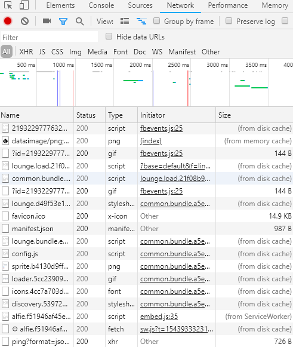

如何從搶票按鈕來看網頁開發 HTML/CSS/JavaScript/API 除錯技巧?
這篇文章會介紹在按下F12開啟開發者工具後，看到的 Element、Network、Console Tab，接著會示範 DOM 即時檢視、修改功能這個很棒的 debug、hack 的工具。另外在網站測試時，前端、PM、後端、QA 常常會因為觀念跟知識不對等而無法重現問題，除了使用瀏覽器的開發者工具協助外，會談談還有什麼基本的除錯觀念是我們需要知道的呢? 相信在認知一致後的溝通會變得更加順暢。
Element Tab 簡介
常常就會發現，按鈕不能按怎麼辦？通常有按鈕又不能按就是被 disable 了，所以可以用開發者工具中的左上角，那個框框包住的小箭頭，按下去我們就可以任意選擇畫面中的任何元素，而輸入框跟按鈕都是可以透過元素的屬性去進行開啟或停用，所以如果想要破解的話，就是看看按鈕有沒有這個屬性??? 有的話恭喜你，對著 disabled 點兩下然後刪除他，然後就發現可以按了。
網頁實作範例
先開記事本貼上下面一段，另存成自己覺得很酷炫的名字，下拉式記得選所有檔案，副檔名用 html 我就是存成 demo.html。
1 |
|
接著就可以直接用瀏覽器打開，會看到一個不能按的按鈕，這時候可以按看看，看 console 裡面有沒有出現文字，當然沒有，照著上面說的試一次看看，有就是成功了 xddd 接著又剛好看到傻呼呼按鈕上綁了一個 ID ，這次又恭喜你惹 xddd 這時候只要複製下面這行:
document.getElementById('click').click();
複製後到 console 執行，這次範例的 id 是 click 所以執行後會發現，這樣就等同於我們手按的效果。可是這樣只有執行一次我想狂點怎麼辦? 也很簡單只要像下面這樣就會每 500ms 幫你自動點一次按鈕惹 xddd 當然如果遇到高竿一點的前端攻城獅，這些可能就無效 QQ
1 | let count = 1; |
以下附上動圖支援 xddd
HTML 除錯方式 (Debug)
開發靜態網頁時，可能會遇到下面的問題：
- 存完檔後就需要重新整理頁面來看結果。
- 資源檔路徑的設定可能在 local 和 server 上有差異。
解決方案就是在開發時：
- 使用 livereload 及他的 chrome 外掛。
- 使用 Chrome 提供的 Web Server。
CSS 除錯方式 (Debug)
在樣式檔的開發上：
- 按 F12 開啟開發者工具之後，打開之後 Elements 這個 tab 就可以讓我們看到所有針對這個樣式的設定，包含 Box modal 的示意圖，在用戶端就可以透過直接修改來看更動效果。
- 按 F12 開啟開發者工具之後，使用模擬器模擬各種裝置大小。
- 按 F12 開啟開發者工具之後，手機開啟開發者模式，使用 Chrome 開發者工具的 remote devices，就可以使用手機的 chrome 去 Debug。
- 防呆上，也建議使用編輯器的相關外掛像是 Sass Lint，可以幫我們避開不少問題。
Network Tab 簡介
- 狀態欄位：前端正常可以接到 timeout 的訊息，但如果前端攻城獅沒有做例外處理的話，原則上你就會只看到瀏覽器正在載入中，圈圈瘋狂旋轉。打開其中 network 的頁籤，可以看到有一個狀態欄位，我們可以從這裡來做初步的判斷，看到 500 或 timeout 的話，就可以直接再按一次了。
- 200 代表沒有問題
- 4XX 使用者端
- 5XX 伺服器端
- 流量分析，我們也可以透過這裡 Size 觀察到相關的流量變化，在網站載入速度過慢時，這裡會是很好的觀察點。

Console Tab 簡介
Console 的部分也就是程式語言的執行環境，而 Javascript 由於是直譯的程式語言，也就是你直接打 console.log('hello') 按下 enter 後就會執行。這樣的特性使我們需注意盡量不要使用或產生 Global 變數，避免覆蓋的問題。
若我們是有使用到 webpack，在除錯的時候就可以善用process.env.NODE_ENV === 'development'，透過這樣的判斷，可以在開發的狀態時，預先加入特殊條件及預設值，可以減少許多人工重複的部分。
另外透過在 Debug 的時候善用 console 留下紀錄並搭配debugger; 指令 來執行瀏覽器上可用的除錯功能（一般為中斷點）。
- console.log() 記錄
- console.error() 顯示錯誤紅色
- console.info() 顯示資訊
- console.warn() 顯示警告黃色
- console.clear() 清除 console
- console.time() + console.timeEnd() 計算範圍內的物件耗費間
- console.table() 適用陣列的內容
想要在 production 的時候自動隱藏 console.log 內容的話，建議可以先封裝，然後針對環境去做進一步的控制。另外不想一直重新整理的話，hot reload 就很重要：
- 瀏覽器端：目前只要是使用主流的框架或是函式庫都會幫我們配置好
- 伺服器端：需要使用
nodemon這樣的工具，並在執行的時候告訴工具監看檔案的變化nodemon --watch ./src/* server.js
編輯器也建議使用編輯器的相關外掛，特別是 ESLint (eslint-plugin-react 及 eslint-plugin-react-hooks)，React 開發者，可以使用官方文件中 error boundaries 的概念，一來不會讓整個網頁掛掉，二來可以在發生錯誤時，將相關資訊送回後端記錄，另外在 production 環境因為通常會進行程式碼的壓縮及醜化，所以若是需要在 Production 環境中偵錯的話，要記得一併輸出 .map 檔。
API 除錯方式 (Debug)
前端在發非同步請求時通常會使用到 Promise，在實作時記得加上 catch，否則少數狀況會 Uncaught (in promise)。那在實作上 Postman 是個方便的好工具，可以先測試 API 是否正常，真的遇到問題時，如果是 node.js 撰寫的後端，在瀏覽器中輸入 about://inspect，我們就可以使用瀏覽器來看伺服器的 log，介面會比較友善一些。再來就是資料的確認，這時候推薦可以使用線上的 JSON Formatter and Validator。網頁部分會需要開發者工具中的 Network，我們就可以看到伺服器回覆的狀態碼以及 Response，然後針對相關狀態及回應進行處理，底下是相關代碼的簡易分類：
- 200 成功
- 4XX 用戶端的問題
- 5XX 伺服器端的問題
清除網頁快取的方式
常常我們看到的網頁跟別人看見的網頁不一樣，那了解情境並重現錯誤是第一步，再來當發布到測試環境時，因為網站會在很多地方有快取機制，所以建議底下幾種方法清除快取並刷新頁面，來確保大家看到的是同一個網頁。
- 用
Ctrl+F5進行強制更新。 - 按 f12 開啟開發者工具之後，對瀏覽器上的重新整理按右鍵，開啟選項後選最下面 empty cache and hard reload。
- 按 f12 開啟開發者工具之後，去 Application 中清除。
小結
其實學了那麼多最容易的，就是明白大概的觀念後:
- 搶票記得多開幾個瀏覽器，先把可以填的先填好，選完第一次沒搶到或沒回應不要灰心，放棄他換到另外一個瀏覽器，等其他人家交易失敗，因為任何因素都可能造成交易沒有成功
- 切記不要重新整理，可以直接送就再送一次，因為前一次沒成功你剛填的就還有效，就算再重新整理一次，也可能因為爆頻寬而拿不到任何資料。就像是一個正妹很多人 line ，但正妹頻寬已爆，已讀不回、不讀不回 QQ
目前主流的網頁設計都是採前、後端分離的概念，那前端和後端的溝通，溝通上一定有一些安全上需要注意的東西，普遍也會針對這些點去做防範。
喜歡這篇文章，請幫忙拍拍手喔 🤣